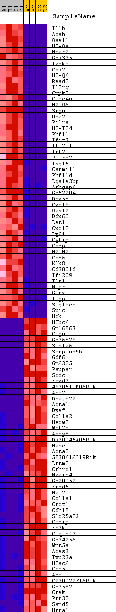
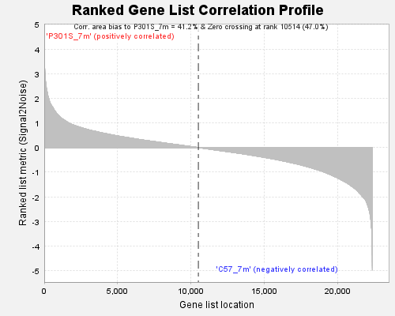

Fig 1: heat_map
Heat Map of the top 50 features for each phenotype in gsea_7m_collapsed_to_symbols.P301S_7m_vs_C57_7m.cls#P301S_7m_versus_C57_7m

Fig 2: Ranked Gene List Correlation Profile
Ranked list correlations for gsea_7m_collapsed_to_symbols.P301S_7m_vs_C57_7m.cls#P301S_7m_versus_C57_7m